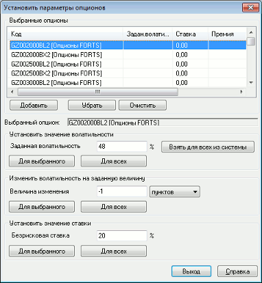

Данное окно представляет собой «опционный калькулятор» для расчета премии по
опциону на основе формулы Блэка-Шоулза. В качестве цены фьючерса используется
цена последней сделки фьючерсного контракта, являющегося базовым активом. Открытие окна «Установить параметры опционов» осуществляется одним из следующих способов:
 Значения полей в таблице «Выбранные опционы»:
Параметр
Значение
Код
Код опциона в следующем формате: «EERU-6.06 120406C
18500», где «EERU-6.06» - код фьючерса, «120406С» - опцион CALL с датой
исполнения 12 апреля 2006 г., «18500» - величина страйка. В квадратных
скобках указан класс инструментов
Задан.волатильность
Значение волатильности, заданное пользователем
Ставка
Значение безрисковой процентной ставки, используемое для
вычисления расчетной премии
Премия
Расчетная премия, вычисляемая в QUIK по заданной
волатильности
* Волатильность
Значение волатильности, транслируемое из торговой
системы
Теор.цена
Значение расчетной премии, транслируемое из торговой
системы
* - если включен признак «Исходя из настроек открытых пользователем таблиц» (см. Настройка параметров получения и сохранения данных), то трансляция параметра «Волатильность» из торговой системы возможна только в случае, если данный параметр заказан. Если параметр не заказан, то необходимо либо открыть Таблицу текущих торгов с этим параметром, либо провести его ручной заказ.
Нажатием кнопки «Выход» окно закрывается, а результат отображается в таблице «Доска опционов» и Таблице параметров опционов.
См. также Таблица параметров опционов.